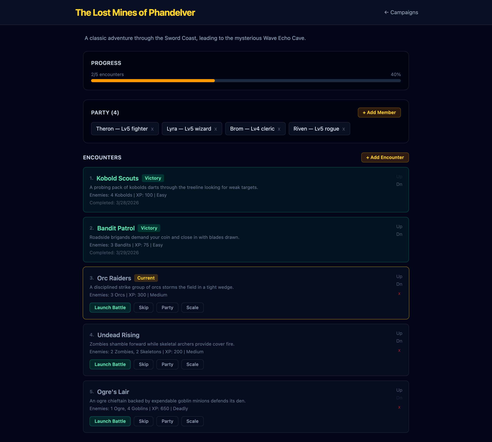
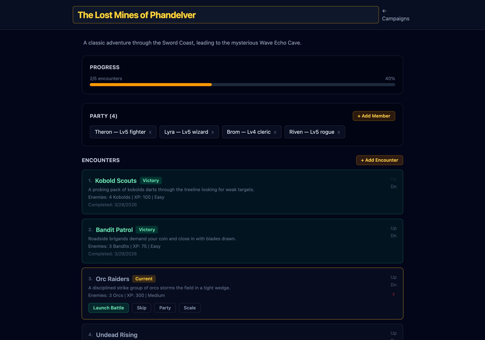
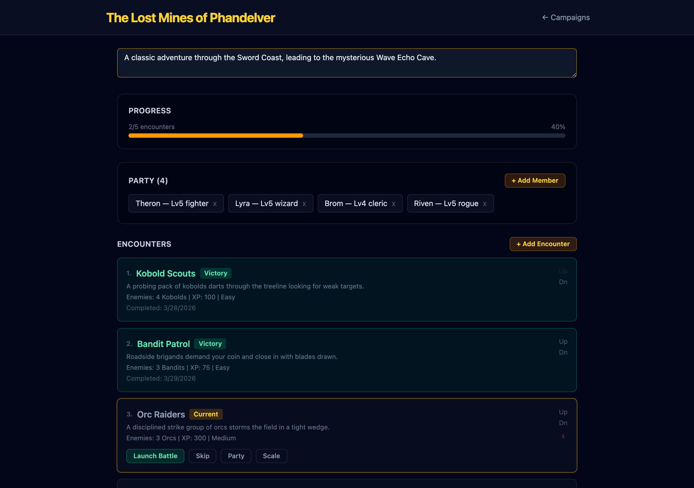
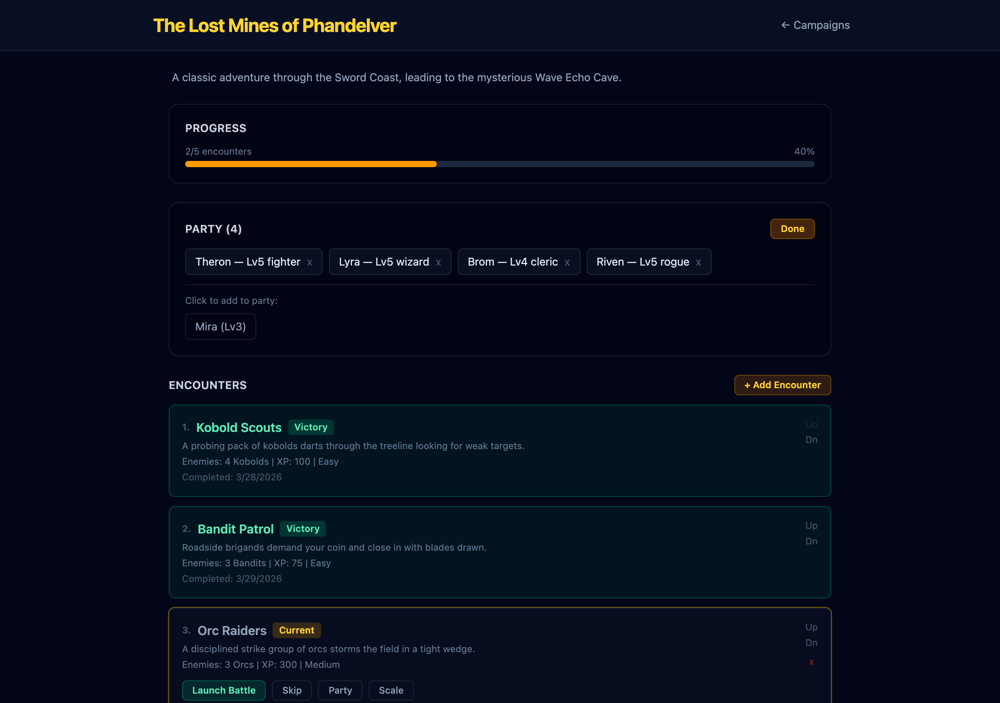
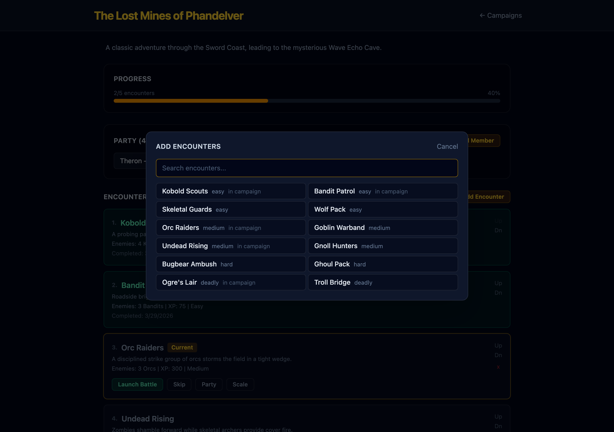
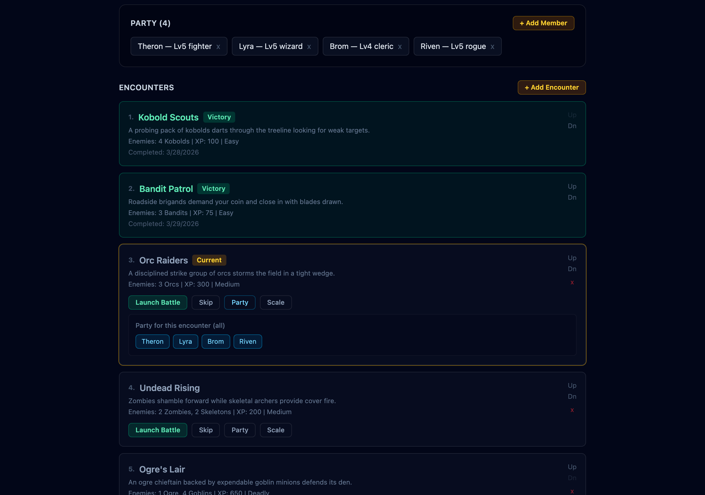
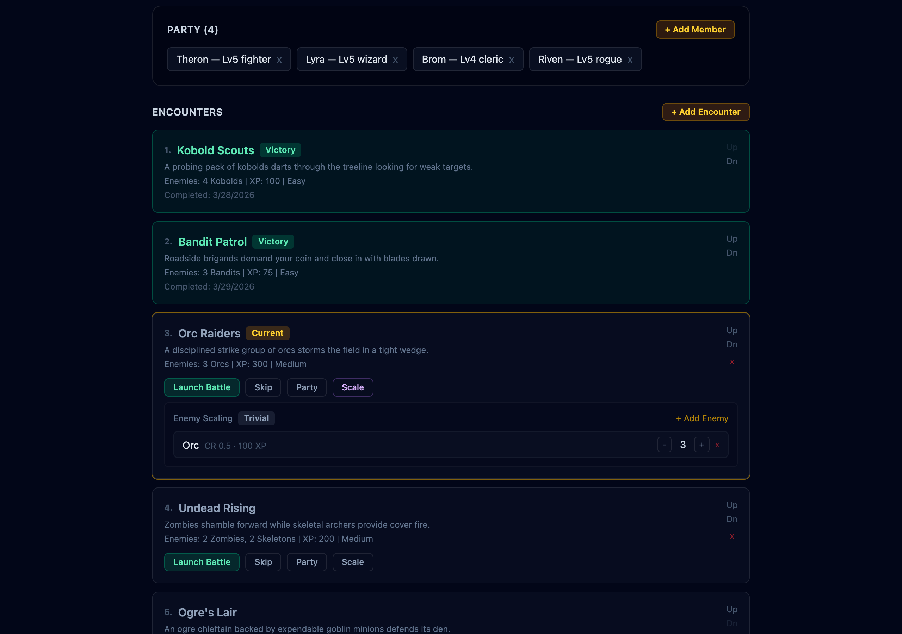
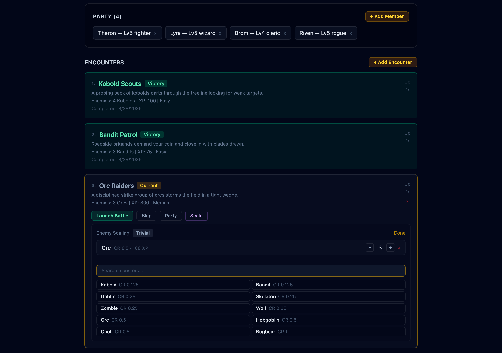

PR #81 —
Closes #75,
#76,
#77,
#78,
#79,
#80
— Branch: feat/10a-campaign-metadata-editing
The redesigned campaign detail page with editable name, party roster with add/remove controls, encounter list with reorder buttons, and "+ Add Encounter" / "+ Add Member" actions.

Click the campaign name to activate edit mode. Save on Enter or blur, cancel on Escape. Empty names are rejected.

Click the description to open a textarea for multi-line editing. Same save/cancel behavior as the name field.

Click "+ Add Member" to reveal available characters not yet in the party. Each party member badge has an [x] remove button with a confirmation dialog. Removing a member also cleans up per-encounter party overrides.

Click "+ Add Encounter" to open the encounter library. Search by name or difficulty. Multi-select encounters and add them to the campaign. New encounters default to "pending" status.

Click "Party" on any pending encounter to toggle which party members participate. Deselected members sit out. "Use Full Party" resets the override. A badge shows the count (e.g., "3/4 party").

Click "Scale" to adjust enemy composition. Use +/- controls to change counts (max 10). The difficulty badge recalculates live using the D&D 5e encounter math. A "Customized" badge appears on modified encounters.

Click "+ Add Enemy" to browse the full monster library. Search by name or type. Click to add a new enemy type or increment an existing one. "Reset to Original" clears all overrides.

| Component | Purpose |
|---|---|
EditableText | Reusable click-to-edit for name & description |
PartyRosterEditor | Add/remove party members with toggle picker |
EncounterListEditor | Encounter CRUD with reorder controls |
AddEncounterModal | Encounter library picker with search |
EncounterPartyPicker | Per-encounter party toggle buttons |
EncounterScaler | Enemy scaling with live difficulty badge |
| Aspect | Detail |
|---|---|
| Data model | Added CampaignEncounterEnemy type; extended CampaignEncounter with optional partyOverride and enemyOverrides |
| Persistence | All writes via Dexie (IndexedDB). No schema migration — new fields are optional, not indexed. |
| Battle integration | BattlePage accepts enemyOverrides via router state and spawns overridden enemies with auto-generated positions. |
| Index safety | Shared recalculateCurrentIndex helper used by all structural mutations (add/remove/reorder/skip/complete). |